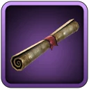
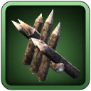
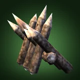
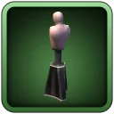
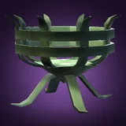
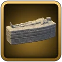

Loot and items
Loot rounds, item tiers, the inventory and equipping.
Items are the loot of Warspire. You do not buy them: at set points in the match you are offered a choice of 3 and keep one. This page covers when loot arrives, how the offer is rolled, where items go, which units can wear what, and what happens to an item when its wearer is sold or upgraded. For the items themselves see Items.
- Choices per offer
- 3
- Rerolls per offer
- 1
- Inventory size
- 12
- Items per unit
- 1
- Extra preparation time on a loot round
- 10 seconds
- Items in the game
- 109
Loot rounds
Some rounds are loot rounds. On a loot round every player still in the match is shown an item offer at the start of the preparation phase, and that phase lasts 10 seconds longer than usual. The loot rounds are rounds 1 and 4, then every 4 rounds from round 8. The fight of a loot round is an ordinary fight.
The tier of the items on offer depends only on the round number:
| Rounds | Item tier | Loot rounds in this span | Offers |
|---|---|---|---|
| 1 to 7 | Tier 1 Common | 1, 4 | 2 |
| 8 to 15 | Tier 2 Uncommon | 8, 12 | 2 |
| 16 to 23 | Tier 3 Rare | 16, 20 | 2 |
| 24 to 31 | Tier 4 Epic | 24, 28 | 2 |
| 32 to 60 | Tier 5 Legendary | 32, 36, 40, 44, 48, 52, 56, 60 | 8 |
With the extra time included, the preparation phase of loot round 1 lasts 25 seconds; every other loot round lasts 40 seconds.
That is 16 offers at most in a match that runs its full length of 60 rounds. Most matches end far sooner, so the later loot rounds are rarely reached.
The item offer
- The offer shows 3 items of the round's tier. You take one. The others are gone.
- The items in one offer are always different from each other.
- Every item of the tier that can be offered to you is equally likely. There are no weights by kind or by anything else.
- An offer never shows an item you already own, whether it is in the inventory, on a unit, or a global item. Every tier has more items than a whole match can use up.
- Some items have an ownership limit. Once you own that many copies the item never appears in your offers again. 27 items have such a limit; they are listed under Stacking and duplicates.
- If no item of the round's tier can be offered to you, the offer falls back to the next lower tier that has one, and after that to the higher tiers, up to tier 5.
- Each offer can be rerolled once, free of charge. The new offer avoids the items you were just shown as well as the items you own.
- The offer stays open for the whole preparation phase. If you have not chosen when combat starts, one of the offered items is picked for you at random. If that item cannot be taken because the inventory is full, the others are tried, and if none fits the offer is lost.
- Only one offer is open at a time.
- Items cannot be sold, traded or thrown away. Once taken, an item is yours for the rest of the match.
The table gives the chance that one particular item is among the 3 shown the first time a tier is offered to you. An item you own leaves the draw, so the chance for each of the others rises a little with every item of that tier you take.
| Item tier | Items that can be offered | Chance a given item is in the offer |
|---|---|---|
| Tier 1 Common | 18 | 3 in 18 (16.7%) |
| Tier 2 Uncommon | 29 | 3 in 29 (10.3%) |
| Tier 3 Rare | 25 | 3 in 25 (12.0%) |
| Tier 4 Epic | 19 | 3 in 19 (15.8%) |
| Tier 5 Legendary | 18 | 3 in 18 (16.7%) |
Kinds of item
Warspire has 109 items in 5 tiers. Each item has a kind. Offensive, defensive and support items are worn by a unit. Global items are not worn and work for the whole warband. The kind does not change how an item is offered: an offer draws from every kind of the round's tier at once. The full list is on the Items page and in the Item table.
| Tier | Offensive | Defensive | Support | Global | Total |
|---|---|---|---|---|---|
| Tier 1 Common | 7 | 6 | 4 | 1 | 18 |
| Tier 2 Uncommon | 9 | 9 | 6 | 5 | 29 |
| Tier 3 Rare | 6 | 6 | 7 | 6 | 25 |
| Tier 4 Epic | 6 | 5 | 4 | 4 | 19 |
| Tier 5 Legendary | 4 | 3 | 7 | 4 | 18 |
| All tiers | 32 | 29 | 28 | 20 | 109 |
Inventory and equipping
- The inventory holds up to 12 items. Only items that are not on a unit count. Items worn by units and global items take no space.
- A unit wears one item at most. This is true for units on the board and units on the bench; both can wear an item.
- Putting an item from the inventory on a unit that already wears one sends the old item back to the inventory.
- Dragging a worn item onto another unit moves it. If the other unit already wears an item, the two units swap items. The swap is refused if the item coming back would not be allowed on the first unit.
- Taking an item off a unit returns it to the inventory. This is refused while the inventory is full (12 items).
- Items can be moved at any time, even while a fight is running. A fight uses the items as they were when it began, so a change made during combat counts from the next fight.
- An item gives its bonuses and effects only while it is worn by a unit that is on the board when the fight begins. Items in the inventory and items on benched units do nothing in the fight.
- Your commander can wear one item like any unit, under the same restrictions.
Restrictions
Most items fit any unit. A few are limited. An item that does not fit is refused when you try to equip it, and a swap that would leave either unit with an item it may not wear is refused as a whole.
| Restriction | Meaning | Items | Which |
|---|---|---|---|
| Ranged only | Only a ranged unit can wear it: a unit whose attack range at one star is more than 1 cell. | 1 |  Longshot Scope Longshot Scope |
| Melee only | Only a melee unit can wear it: a unit whose attack range at one star is 1 cell or less. | 1 |  Sweeping Warblade Sweeping Warblade |
| Needs a mana ability | Only a unit that has an ability and a mana bar to cast it with can wear it. | 5 |  Runescribed Quill Runescribed Quill Cinder Core Cinder Core Hourglass Prism Hourglass Prism Renewal Orb Renewal Orb Archmage Codex Archmage Codex |
- Of the 65 units in the shop, 35 are melee and 30 are ranged.
- Every unit in the shop has a mana ability, so the last row never blocks a shop unit.
- For commanders: Brugg Ironjaw counts as melee and Vey the Pactbinder, Pip Quickfingers, Fizzwick Emberhorn count as ranged. No commander has a mana bar (their abilities run on cooldowns), so no commander can wear an item that needs a mana ability.
- Global items are never worn by a unit at all.
Global items
20 items are global. A global item is not worn by a unit and cannot be equipped. The moment you take it from an offer it starts working for your whole warband, and it keeps working for the rest of the match.
- It never enters the inventory, so it takes no inventory space and can be taken even when the inventory is full (as long as the offer was made at all).
- It cannot be moved, removed or lost. Selling units does not affect it.
- It appears in the same offers as other items of its tier.
- A global bonus to allied units applies to every unit on your side of the fight: your board units, your commander, and anything summoned during the fight.
- An item that counts as an extra different unit of an alliance only counts while at least one real unit of that alliance is on your board. It cannot switch on an alliance by itself. See How alliances count.
- Extra gold per round is paid with the rest of the round's income and obeys the gold cap of 100.
- Extra unit cap is added on top of the cap from your level.
| Item | Tier | What it does |
|---|---|---|
 Oathbound Insignia Oathbound Insignia | Tier 1 | Counts as 1 extra different unit of  Oathbound (only while a real one is on your board). Oathbound (only while a real one is on your board). |
| Tier 2 | Counts as 1 extra different unit of  Cutthroat (only while a real one is on your board). Cutthroat (only while a real one is on your board). | |
 Ironsight Monocle Ironsight Monocle | Tier 2 | Counts as 1 extra different unit of  Ironsight (only while a real one is on your board). Ironsight (only while a real one is on your board). |
 Recruiter's Ledger Recruiter's Ledger | Tier 2 | Shop rerolls cost 1 gold less (never below 0). |
 Shade Pennon Shade Pennon | Tier 2 | Counts as 1 extra different unit of  Shade (only while a real one is on your board). Shade (only while a real one is on your board). |
 Venomist Sigil Venomist Sigil | Tier 2 | Counts as 1 extra different unit of  Venomist (only while a real one is on your board). Venomist (only while a real one is on your board). |
 Abyssal Emblem Abyssal Emblem | Tier 3 | Counts as 1 extra different unit of  Abyssal (only while a real one is on your board). Abyssal (only while a real one is on your board). |
 Duelist Token Duelist Token | Tier 3 | Counts as 1 extra different unit of  Duelist (only while a real one is on your board). Duelist (only while a real one is on your board). |
 Ravager Seal Ravager Seal | Tier 3 | Counts as 1 extra different unit of  Ravager (only while a real one is on your board). Ravager (only while a real one is on your board). |
 Stalker Crest Stalker Crest | Tier 3 | Counts as 1 extra different unit of  Stalker (only while a real one is on your board). Stalker (only while a real one is on your board). |
 Tithe Purse Tithe Purse | Tier 3 | 1 extra gold with each round's income. |
 War Drums War Drums | Tier 3 | Every allied unit in the fight gains +10% attack speed. |
 Battle Hymn | Tier 4 | Every allied unit in the fight gains +150 maximum health. |
 Iron Discipline Iron Discipline | Tier 4 | Every allied unit in the fight gains +4 armour. |
 Merchant's Compass Merchant's Compass | Tier 4 | 2 extra gold with each round's income. |
 Scholar's Index Scholar's Index | Tier 4 | Every allied unit in the fight gains +2 mana per second. |
 Gilded Invitation Gilded Invitation | Tier 5 | The shop rolls its tier odds as if you were 1 level higher (up to shop level 11). |
| Last Stand Banner | Tier 5 | Every allied unit in the fight gains +15% attack damage. |
 Veteran's Charter Veteran's Charter | Tier 5 | Raises your unit cap by 1. |
 Warmaster's Codex Warmaster's Codex | Tier 5 | Every allied unit in the fight gains +12% attack speed, +3 armour. |
Placeables
5 items plant an object on the battlefield. Such an item is worn like any other. At the start of each fight the object appears in the free cell nearest to the wearer, so where you stand the wearer decides where the object goes. The objects themselves are described on Summons and placeables.
| Item | Tier | Kind | Plants |
|---|---|---|---|
 Palisade Stakes | Tier 2 | Defensive | 3 x  Spiked Palisade |
 Straw Decoy | Tier 2 | Defensive | 1 x  Straw Decoy Straw Decoy |
 Sunfruit Sapling Sunfruit Sapling | Tier 3 | Support | 1 x  Sunfruit Tree Sunfruit Tree |
 Mending Totem Mending Totem | Tier 4 | Support | 1 x  Mending Totem |
 Restless Gravestone | Tier 5 | Support | 1 x  Restless Gravestone Restless Gravestone |
- A planted object never moves and never attacks. It acts only through its own abilities and effects.
- It can be attacked and destroyed like a unit, which is how a decoy or a barricade protects the units behind it.
- It does not keep your side alive. When your last fighting unit falls the fight is lost, and any objects still standing collapse with it.
- It is a summon: it does not count toward the unit cap or toward alliances, and it deals no player damage if it survives.
- The object is new each fight. Nothing about it carries over to the next round.
- The wearer must be on the board. On a benched unit the item plants nothing.
Selling and upgrading units
- Selling a unit. The item it wears returns to your inventory. You never lose an item by selling.
- Upgrading a unit. When 3 copies combine into a higher star (see Star upgrades), the upgraded unit is the copy on the board if there is one, otherwise the first copy on the bench. If that copy wears an item it keeps it. If it wears none, it takes the item of the first copy consumed that has one (bench copies are consumed before board copies). Every other item worn by the consumed copies returns to the inventory.
- Units removed for you. If your board is over the unit cap when combat starts and a unit has to be sold to fix it, its item returns to the inventory in the same way. A unit that is only sent to the bench keeps wearing its item.
Stacking and duplicates
- A unit wears one item, so one unit can never carry two copies of the same item.
- With the current loot schedule you can never be offered an item you already own, so every item is held at most once and two copies of one item never meet in a warband.
- Bonuses from different items, alliances and abilities are separate and all apply together. How they add up is on Stat reference.
- 27 items have a fixed ownership limit of 1 copy, which holds whatever the loot schedule is. Once you own it, the item stops appearing in your offers: Oathbound Insignia
 Cutthroat BadgeIronsight MonoclePalisade StakesRecruiter's LedgerShade PennonStraw DecoyVenomist SigilAbyssal EmblemDuelist TokenRavager SealStalker CrestSunfruit SaplingTithe PurseWar DrumsBattle HymnIron DisciplineMending TotemMerchant's CompassScholar's Index
Cutthroat BadgeIronsight MonoclePalisade StakesRecruiter's LedgerShade PennonStraw DecoyVenomist SigilAbyssal EmblemDuelist TokenRavager SealStalker CrestSunfruit SaplingTithe PurseWar DrumsBattle HymnIron DisciplineMending TotemMerchant's CompassScholar's Index Colossus GreatswordDawnfire BrazierGilded InvitationLast Stand BannerRestless GravestoneVeteran's CharterWarmaster's Codex
Colossus GreatswordDawnfire BrazierGilded InvitationLast Stand BannerRestless GravestoneVeteran's CharterWarmaster's Codex - Every global item is limited to one copy, so two copies of the same global item never exist. Different global items do add together: two different items that each give gold per round pay both amounts, and two different items that each boost allied units both apply.
See also
- Items: every item by tier and kind.
- Item table: every item's bonuses side by side.
- Rounds and phases: the phases of a round and their timers.
- Summons and placeables: the objects that placeable items plant.
- How commanders work: commanders can wear items too.
- Stat reference: what each bonus on an item means.